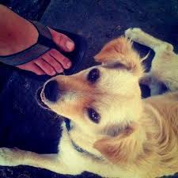

Analyse Stratégique de l'Empire de l'Image (2010 - 2026)
Fait par :
- Nabil Ousseily
- Rami el Aro
- Peter Haydamous
Le Projet Burbn
L'application initiale s'appelait Burbn. C'était un service complexe destiné à partager sa position géographique sur une carte.
Les fondateurs ont réalisé que les utilisateurs ignoraient la plupart des fonctions mais adoraient les filtres photo. Ils ont donc épuré le projet pour créer Instagram.
Les Fondateurs
Le succès d'Instagram repose sur le duo complémentaire de l'Université de Stanford :
Kevin Systrom, le visionnaire en charge du design, et Mike Krieger, l'ingénieur responsable de l'infrastructure technique.
Le Succès du Lancement
Dès le 6 octobre 2010, il y a eu un succès immédiat et foudroyant. L'application a enregistré plus de 25 000 inscriptions en seulement 24 heures.
Cette réussite s'explique par la simplicité de l'interface et la possibilité de transformer instantanément une photo banale en une image artistique grâce aux filtres numériques.
Acquisition par Facebook
En 2012, Mark Zuckerberg rachète la plateforme pour 1 milliard de dollars.
À l'époque, l'entreprise ne comptait que 13 employés. C'était un pari stratégique massif sur l'avenir de la photographie mobile.
La Première Publication
Cette photo a été publiée par Kevin Systrom en juillet 2010 lors des phases de test.

Lieu : Mexique. Sujet : Un chien près d'un stand de tacos.
Évolution Visuelle
Démographie et Audience
Instagram est aujourd'hui dominé par une audience jeune et engagée :
Âges : Plus de 60 % des utilisateurs ont entre 18 et 34 ans (Génération Z et Millennials).
Genres : La répartition est presque équilibrée au niveau mondial, avec environ 51 % d'hommes et 49 % de femmes.
Le Modèle Publicitaire
Instagram génère des revenus via la publicité ciblée.
Le ciblage signifie qu'Instagram utilise vos données (ce que vous aimez, vos recherches, votre âge) pour vous montrer uniquement des publicités qui vous intéressent personnellement. Cela permet aux marques de ne pas gaspiller d'argent en montrant des produits aux mauvaises personnes.
Chaque année, cela rapporte environ 70 milliards de dollars à Meta.
Conclusion
Instagram a révolutionné notre façon de communiquer visuellement. En passant d'une simple application de filtres à un moteur économique majeur, elle a redéfini le marketing moderne.
Elle reste aujourd'hui la plateforme de référence pour les créateurs de contenu et les marques du monde entier.